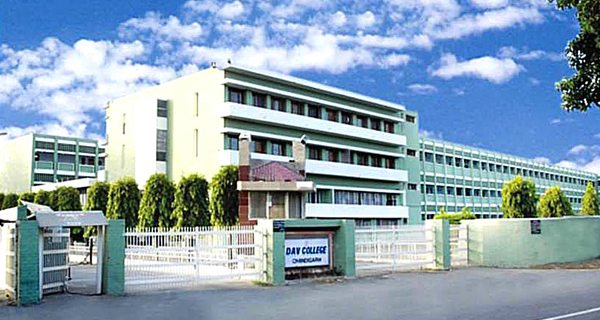
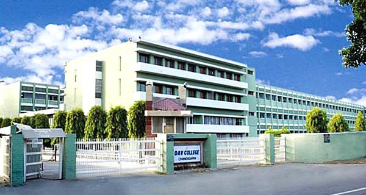

D.A.V. COLLEGE SECTOR -10 CHANDIGARH
 


Computer Science Department
With globalization of the Indian economy, vast opportunities of growth have been thrown open for the computer software and hardware industry. Software being one of the largest growing sectors of the Indian economy, the Department of Computer Science & Engineering at the PEC has been at the forefront of churning out software engineers with a high caliber of technical expertise. It continues to foster and engender the innovation and breadth of vision necessary to excel in the blooming software industry. The experienced faculty exposes the would be computer engineers to a rigorous and exhaustive curriculum designed to bring out the best in them and to keep them in touch with the latest state of the art technology. Besides imparting theoretical knowledge, a lot of stress is laid on hands-on training and overall, development of the individual’s personality. The teaching programs has been devised keeping in view close interaction with the industry. The competence of the department is reflected in the growing demand for its fresh graduates. The number of recruiting companies has multiplied many fold in the last few years. A few alumni of the department are offering their expertise in the US with companies like MICROSOFT, SEAGATE etc.
The department strongly believes that neither the industry, nor the academics alone have the resources to adequately deal with the quest for innovative excellence in this field of computers, for global competitiveness. Hence the Institute-Industry interface programs enables the students to interact constantly with the industries. Equal importance is given to the classroom learning which is meant primarily for the theoretical or conceptual inputs of knowledge on a variety of projects.
The department has excellent computing facilities which include Pentium based computer systems, scanners, servers, multimedia kits, robotics lab ,Indy Graphic workstation etc.